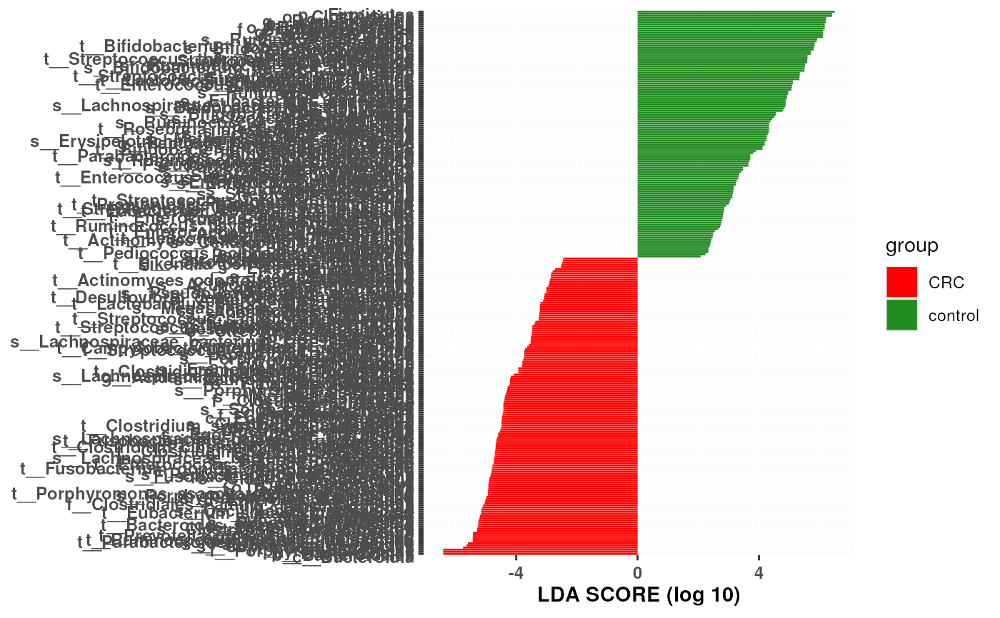

lefserPlot function displays effect sizes for differentially expressed microorganisms
and whether they are more abundant in '0' or '1' sample group.
lefserPlot(df, colors = c("red", "forestgreen"), trim.names = TRUE)Data frame produced by lefser.
character(2) The two colors corresponding to class 0 and 1,
respectively. Defaults to c("red", "forestgreen").
If TRUE extracts the most specific taxonomic rank of organism.
Function returns plot of effect size scores produed by lefser.
Positive scores represent microorganisms with that are more abundant in class '1'.
Negative scores represent microorganisms with that are more abundant in class '0'.
example("lefser")
#>
#> lefser> # (1) Using classes only
#> lefser> data(zeller14)
#>
#> lefser> # exclude 'adenoma'
#> lefser> zeller14 <- zeller14[, zeller14$study_condition != "adenoma"]
#>
#> lefser> res_group <- lefser(zeller14, groupCol = "study_condition")
#> Warning: Convert counts to relative abundances with 'relativeAb()'
#> The outcome variable is specified as 'study_condition' and the reference category is 'CRC'.
#> See `?factor` or `?relevel` to change the reference category.
#>
#> lefser> head(res_group)
#> Names
#> 1 k__Bacteria|p__Bacteroidetes|c__Bacteroidia
#> 2 k__Bacteria|p__Bacteroidetes|c__Bacteroidia|o__Bacteroidales
#> 3 k__Bacteria|p__Bacteroidetes
#> 4 k__Bacteria|p__Bacteroidetes|c__Bacteroidia|o__Bacteroidales|f__Porphyromonadaceae
#> 5 k__Bacteria|p__Firmicutes|c__Clostridia|o__Clostridiales|f__Lachnospiraceae|g__Coprococcus|s__Coprococcus_eutactus
#> 6 k__Bacteria|p__Firmicutes|c__Clostridia|o__Clostridiales|f__Lachnospiraceae|g__Coprococcus|s__Coprococcus_eutactus|t__GCF_000154425
#> scores
#> 1 -6.315413
#> 2 -6.315413
#> 3 -6.315381
#> 4 -5.712236
#> 5 -5.581008
#> 6 -5.555817
#>
#> lefser> # (2) Using classes and sublasses
#> lefser> data(zeller14)
#>
#> lefser> # exclude 'adenoma'
#> lefser> zeller14 <- zeller14[, zeller14$study_condition != "adenoma"]
#>
#> lefser> res_block <- lefser(
#> lefser+ zeller14, groupCol = "study_condition", blockCol = "age_category"
#> lefser+ )
#> Warning: Convert counts to relative abundances with 'relativeAb()'
#> The outcome variable is specified as 'study_condition' and the reference category is 'CRC'.
#> See `?factor` or `?relevel` to change the reference category.
#>
#> lefser> head(res_block)
#> Names
#> 1 k__Bacteria|p__Fusobacteria|c__Fusobacteriia|o__Fusobacteriales|f__Fusobacteriaceae|g__Fusobacterium
#> 2 k__Bacteria|p__Fusobacteria|c__Fusobacteriia|o__Fusobacteriales|f__Fusobacteriaceae
#> 3 k__Bacteria|p__Bacteroidetes|c__Bacteroidia|o__Bacteroidales|f__Porphyromonadaceae|g__Porphyromonas
#> 4 k__Bacteria|p__Bacteroidetes|c__Bacteroidia|o__Bacteroidales|f__Porphyromonadaceae|g__Porphyromonas|s__Porphyromonas_asaccharolytica|t__Porphyromonas_asaccharolytica_unclassified
#> 5 k__Bacteria|p__Bacteroidetes|c__Bacteroidia|o__Bacteroidales|f__Porphyromonadaceae|g__Porphyromonas|s__Porphyromonas_asaccharolytica
#> 6 k__Bacteria|p__Fusobacteria
#> scores
#> 1 -5.319767
#> 2 -5.216802
#> 3 -5.010703
#> 4 -4.950247
#> 5 -4.933431
#> 6 -4.830540
lefserPlot(res_group)
